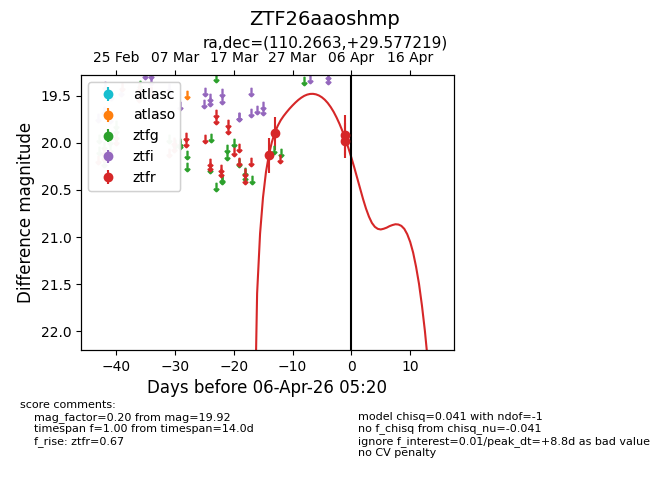
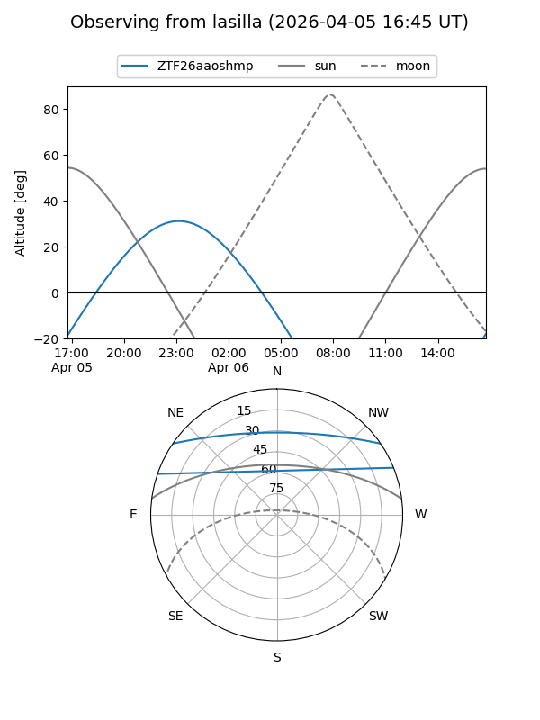
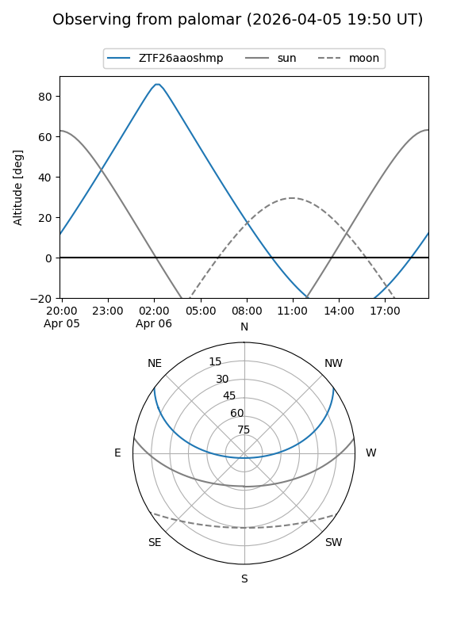
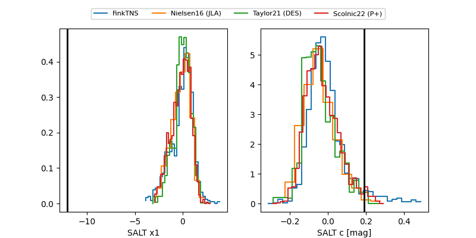

ZTF26aaoshmp
Target ZTF26aaoshmp at 2026-04-06 05:24
Aliases and brokers:
FINK: link
Lasair: link
ALeRCE: link
alt names
ZTF26aaoshmp (ztf,fink_ztf)
Coordinates:
equatorial (ra, dec) = 110.2663,+29.57722
equatorial (HMS+DMS) = 07:21:03.91,+29:34:37.99
galactic (l, b) = (188.7000,+18.95666)
Flags:
Photometry:
last ztfr=19.92
4 ztfr detections
Lightcurve

Visibility


Additional plots
